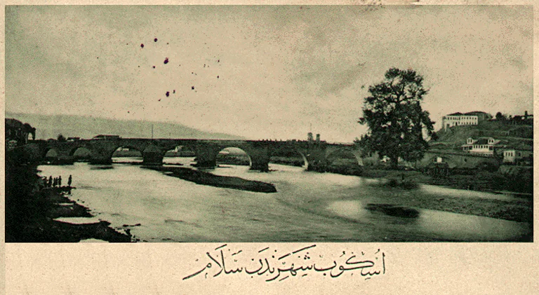
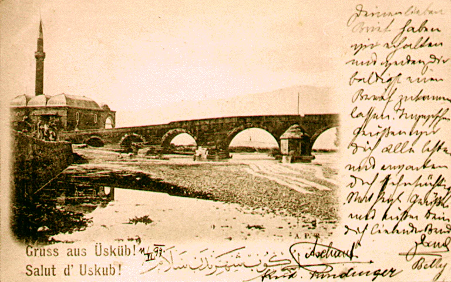
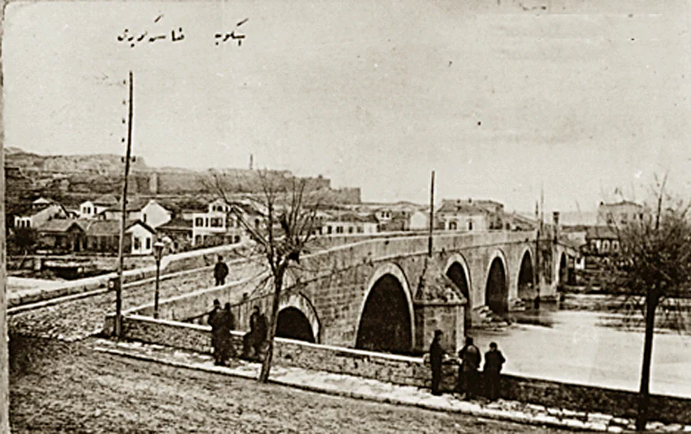
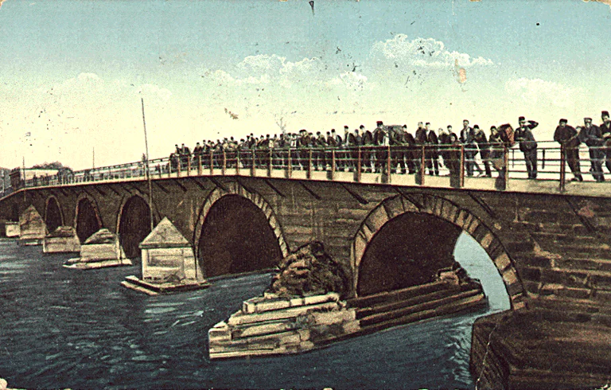
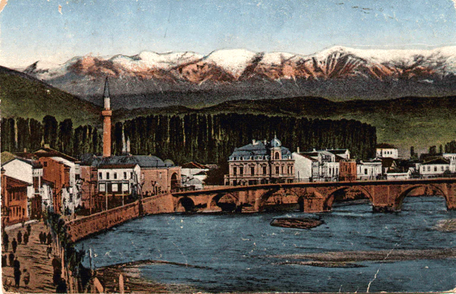
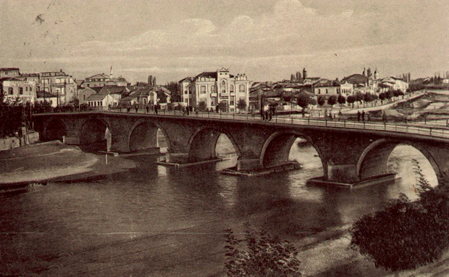
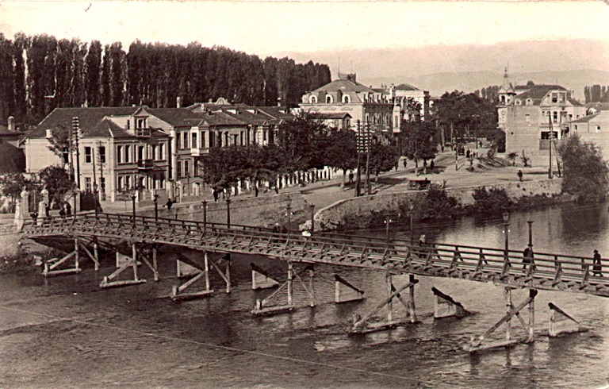
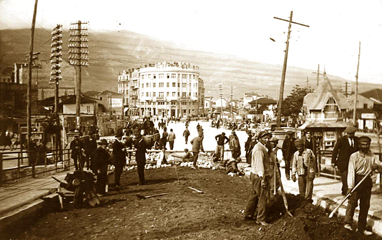
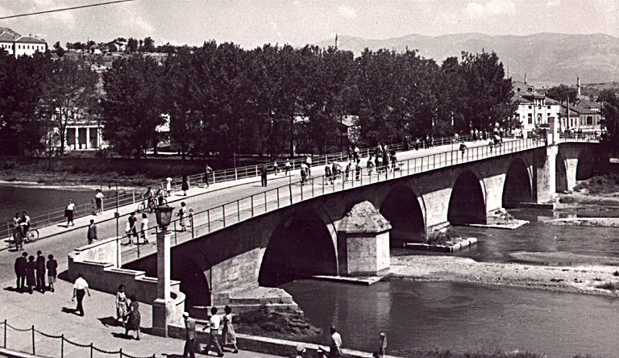

Skopie 1916 - 1917 puente
Documentos de las guerras balcánicas
- Año
- 1916-1917
- Duración
- 00:13

En el centro de la ciudad, sobre el Vardar, se construyó un monumental puente de piedra (conocido popularmente como el Puente de Piedra). Según algunas fuentes turcas, data de la segunda mitad del siglo XV, del reinado del sultán Mehmed II. Según las investigaciones más recientes, de 1990, durante su reconstrucción, se cree que se construyó en tiempos de Justiniano I, en el siglo VI. Está hecho de bloques de piedra bien labrados, y su estructura se apoya en sólidas pilas unidas por 13 arcos de medio punto. En 1905 se hicieron aceras de hormigón, antes cubiertas de tablas. En 1937 se ensanchó con ménsulas, a las que se trasladaron los pasos peatonales. En la foto, Skopie a finales del siglo XIX: el puente de piedra y el viejo plátano. Arriba a la derecha, la fortaleza de Skopie - Kale con el cuartel.

El puente de piedra - finales del siglo XIX. Al fondo a la izquierda se ve la mezquita Burmali.

El puente de piedra - finales del siglo XIX. Al fondo a la izquierda se ve la mezquita Burmali.

Skopie a finales del siglo XIX y principios del XX (en verano) - vista del puente de piedra. En primer plano, un poste telefónico con un buzón. Junto a él, una farola, la primera forma de mobiliario urbano. Como es verano, los peatones se protegen del sol con sombrillas. Las mercancías se transportaban en carros de bueyes, y los coches de caballos eran el transporte público. Junto al puente, a la derecha, se ve una gran rueda de molino.

Skopie a finales del siglo XIX y principios del XX (en invierno) - vista del puente de piedra. En primer plano, un poste telefónico con un buzón. Junto a ellos, una farola, la primera forma de mobiliario urbano. Se ven calles sin empedrar y embarradas. Al fondo, el barrio judío y la fortaleza de Skopie - Kale.

Panorama del puente de piedra a principios del siglo XX.

El puente de piedra - hacia 1905. Al fondo, arriba a la izquierda, se ve la fortaleza de Skopie - Kale con los cuarteles. A la derecha, el viejo plátano.

El puente de piedra a finales del siglo XIX y principios del XX. Arriba a la derecha se ve la fortaleza de Skopie - Kale.

Skopie en la época otomana - principios del siglo XX. En la foto se ve que una mitad del puente de piedra tiene un pretil de piedra y la otra una barandilla provisional de hierro y madera. En 1905 empezó la sustitución del pretil de piedra por uno de hierro. En Skopie en la época otomana - principios del siglo XX. En la foto se ve que una mitad del puente de piedra tiene un pretil de piedra y la otra una barandilla provisional de hierro y madera. En 1905 empezó la sustitución del pretil de piedra por uno de hierro. En la esquina izquierda, detrás del puente, se ve el teatro turco. Junto al puente, a la derecha, una gran rueda de molino. A la derecha, el viejo plátano del que se colgó el cadáver de Karpoš justo después de sofocarse su levantamiento - 1689. Al fondo se ven enteras la fortaleza de Skopie - Kale y las casas del barrio judío. Es curioso el blanqueo de lienzos que hacían las mujeres en el agua limpia del Vardar, en primer plano.

Un grupo de turcos en el puente de piedra - principios del siglo XX. Es interesante observar que las aceras del puente están cubiertas de tablas.

El puente ferroviario sobre el Vardar en Skopie - finales del siglo XIX.

Puente de piedra sobre el río Pčinja - alrededores de Skopie (ya no existe). A juzgar por el hombre de pie en lo alto, el puente tiene unos 15 metros sobre el agua. (años 1910)

Skopie en 1902. En la foto se ve el puente de madera y, detrás, el antiguo café «Boges», donde se celebraron las primeras funciones teatrales. Encima, la fortaleza de Skopie - Kale con el cuartel.

El puente de piedra - 1905. A la izquierda, detrás, se ve el teatro turco y, en la parte superior, la fortaleza de Skopie - Kale.

Vista hacia la margen derecha del Vardar a través de la copa del viejo plátano - hacia 1910. Se ven parte del puente de piedra, la mezquita Burmali y las tiendas frente a ella.

Skopie antes de 1912. El puente de piedra con ménsulas y barandilla de hierro. A la derecha, el viejo plátano y, arriba, la fortaleza de Skopie - Kale.

Skopie durante la guerra balcánica. Al fondo, la mezquita Burmali.

Vista desde parte del puente de piedra hacia la fortaleza de Skopie - Kale (hacia 1910)

Vista de parte del puente de piedra; al fondo a la izquierda se ve el teatro turco. Sobre él se alza la fortaleza de Skopie - Kale. (hacia 1910)

El puente de piedra con un grupo de personas - hacia 1913

El puente de piedra sobre el Vardar en Skopie - hacia 1913

El puente de piedra sobre el Vardar en Skopie - hacia 1913. Al fondo, arriba a la derecha, se ve la fortaleza de Skopie - Kale.

Skopie en 1912 - una pintura. El puente de piedra y la mezquita Burmali. Al fondo, un precioso cinturón verde de álamos. Se aprecia la inserción de arquitectura clásica. Los nuevos espacios del malecón son un elemento urbano nuevo. Los grupos de viviendas, tiendas y talleres ante el puente forman parte de la composición, con rasgos tradicionales y elementos de influencia europea.

El puente de hierro sobre el Vardar en Skopie con vista a la antigua escuela, San Mina y la Santa Madre de Dios - hacia 1920.

El puente de hierro, construido en 1905. Al fondo, el edificio de la primera universidad de Skopie. (1915)

El puente de hierro, construido en 1905. Al fondo, el edificio de la primera universidad de Skopie. (años 1920.)

El puente de hierro sobre el Vardar en Skopie, construido en 1905. Al fondo, el edificio de la primera universidad de Skopie. (años 1920)

El puente de hierro, construido en 1905. (años 1920)

El puente de hierro sobre el Vardar en Skopie con vista a los edificios del malecón «Dimitar Vlahov». (años 1920)

Skopie, hacia 1920. Parte de la plaza ante el puente de piedra. Los primeros quioscos de servicios y venta, con una arquitectura cuidada en los detalles, es decir, en los tejados. El puente se ensanchó con ménsulas peatonales. Al fondo, arriba, se ve la fortaleza de Skopie - Kale.

Skopie, hacia 1920. Parte de la plaza ante el puente de piedra. Delante y sobre el puente se ven pequeñas construcciones para informar a los ciudadanos con carteles. El puente se ensanchó con ménsulas peatonales. Al fondo, arriba a la izquierda, se ve la fortaleza de Skopie - Kale.

El puente de piedra con un grupo de personas que miran la crecida del Vardar. (años 1920)

El puente de piedra - 1920. Al fondo se ve el Banco Otomano.

Vista del puente de piedra hacia la Ciudad Vieja y el barrio de Pajko, con la consulta del dentista Dr. Rubens y el Banco Otomano - hacia 1927.

Vista del puente de piedra hacia la Ciudad Vieja, el bazar y la ladera de Gazi Baba. Junto al puente, a la derecha, estaba la consulta del dentista Dr. Rubens. Algo más a la derecha, el Banco Otomano. Entre ambos había una placita con parada de coches de caballos. En el centro estaba el monumento a los caídos en la guerra balcánica - hacia 1927.

Vista del puente de piedra hacia la Ciudad Vieja, el bazar y la ladera de Gazi Baba. Junto al puente, a la derecha, estaba la consulta del dentista Dr. Rubens. Algo más a la derecha, el Banco Otomano. Entre ambos había una placita con parada de coches de caballos. En el centro estaba el monumento a los combatientes caídos - hacia 1927.

Vista del puente de piedra hacia la Ciudad Vieja y el barrio de Pajko, con la consulta del dentista Dr. Ruben y el Banco Otomano - hacia 1927.

Vista hacia la margen derecha del Vardar con parte del puente y el Casino de Oficiales - años 1930. A la izquierda se ve el resto del viejo plátano talado del que en 1689, tras sofocarse el levantamiento, se colgó el cadáver de Karpoš.

Vista de parte del puente de piedra, el viejo plátano y la fortaleza de Skopie - Kale - hacia 1920.

Skopie, hacia 1920. El puente de piedra con la fortaleza de Skopie - Kale al fondo. En primer plano, blanqueo de lienzos en el agua limpia del Vardar.

Vista de la pasarela de madera y del malecón en la margen derecha del Vardar. Los edificios tienen detalles neoclásicos y barrocos. La calle es la actual «Ilindenska». En la hilera de edificios está también la Escuela Secundaria de Música. En primer plano, la pasarela por la que se llegaba al Teatro Nacional.

La pasarela de madera sobre el Vardar, con el Casino de Oficiales al fondo. Junto a ella, los edificios del banco y de la antigua oficina de correos - finales de los años 1920.

Vista de la pasarela de madera sobre el Vardar; al fondo se ven el Casino de Oficiales, la antigua oficina de correos y el banco - hacia 1930.

Vista hacia la fortaleza de Skopie - Kale con el cuartel. A sus pies está el barrio judío. En primer plano, la pasarela de madera - años 1950.

Vista hacia el Teatro Nacional y la pasarela de madera - años 1930.

El puente de piedra - años 1930. Al fondo, el Teatro Nacional y, sobre él, la fortaleza de Skopie - Kale.

Vista de parte de la plaza y del puente de piedra. Al fondo, a la izquierda, se ven el Teatro Nacional y la fortaleza de Skopie - Kale. Destaca el coche de caballos como principal medio de transporte. En primer plano, edificios derribados para construir el Banco Nacional - hacia 1930.

La crecida del Vardar. El puente está medio cubierto por el agua. La foto se tomó desde la margen derecha hacia la izquierda - años 1930.

Reconstrucción y cambio del empedrado del puente de piedra. Vista del palacio Ristić y los primeros quioscos - hacia los años 1930.

Vista desde el puente de piedra hacia la plaza. A la izquierda se despeja el terreno para construir el Banco Nacional - años 1930.

Vista desde la margen izquierda del Vardar hacia el puente de piedra y el Casino de Oficiales - años 1930.

El puente de piedra sobre el Vardar - hacia 1930. Al fondo se ve el Teatro Nacional y, arriba a la derecha, la fortaleza de Skopie - Kale.

El puente de piedra - años 1950.

Parte del puente de piedra. Al fondo se ve el hotel «Grand». - años 1960

El puente de piedra con la fortaleza de Skopie - Kale en los años 1960, antes de urbanizar el malecón.

Vista del puente de piedra y la fortaleza de Skopie - Kale. (años 1970)

El puente de piedra en los años 1970 con el espacio central del malecón.

El puente de piedra y la plaza en los años 1970.

Vista desde la margen derecha a la izquierda del Vardar, hacia el puente de piedra, parte de la plaza y la nueva oficina de correos al fondo. (años 1970)

El actual puente «Goce Delčev», fotografiado desde la fortaleza de Skopie - Kale. (años 1990)

Documentos de las guerras balcánicas
 Acueducto4 postales
Acueducto4 postales Kale30 postales
Kale30 postales Puentes60 postales
Puentes60 postales Malecón58 postales
Malecón58 postales Plaza46 postales
Plaza46 postales Edificios66 postales
Edificios66 postales Templos cristianos19 postales
Templos cristianos19 postales Edificios musulmanes33 postales
Edificios musulmanes33 postales Casino de Oficiales29 postales
Casino de Oficiales29 postales Teatro28 postales
Teatro28 postales Estación de ferrocarril13 postales
Estación de ferrocarril13 postales Escuelas36 postales
Escuelas36 postales Parques12 postales
Parques12 postales Mercados18 postales
Mercados18 postales Calles38 postales
Calles38 postales Panorama I60 postales
Panorama I60 postales Panorama II30 postales
Panorama II30 postales Collages55 postales
Collages55 postales Inundaciones9 postales
Inundaciones9 postales Terremoto27 postales
Terremoto27 postales Skopie 200026 postales
Skopie 200026 postales